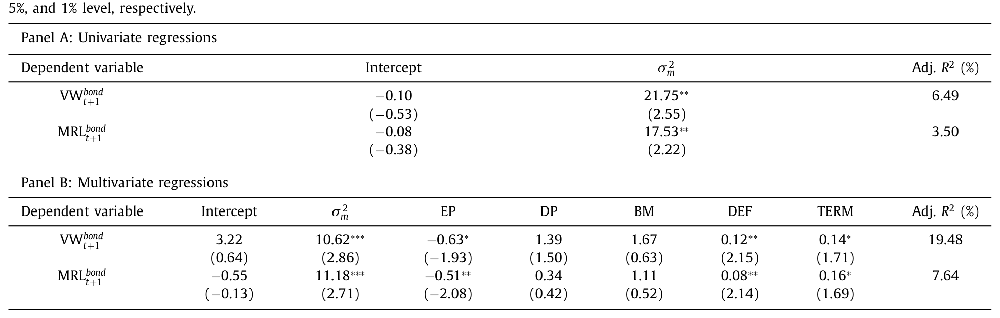
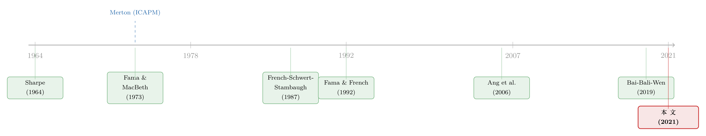

公司债里，风险终于换来了收益
本文读的是 Bai, Bali & Wen (2021, Journal of Financial Economics)：在公司债市场里，无论是时间序列还是横截面，「风险越大、预期收益越高」这条教科书式的关系都成立——市场层面的条件方差能正向预测下个月的债市收益，个券层面的系统性风险能正向预测未来收益；而困扰股票市场几十年的「特质波动率之谜」，在债市里干脆不存在。作者把这套反差，归因于持有人结构的不同。
1 一个被股票市场「打脸」了几十年的命题
资产定价里有一句话，几乎人人会背：风险越大，预期收益越高。
它最早被 Merton (1973) 写成一个干净的式子——著名的 跨期资本资产定价模型 (intertemporal capital asset pricing model, ICAPM)。模型说，市场组合的条件预期超额收益，应当是其条件方差的一个正的线性函数。直觉再朴素不过：市场越危险的时候，理性的投资者就要求越高的风险补偿，否则他凭什么持有这一篮子风险资产？
可问题在于，几十年来，人们拿股票数据去验证这条关系，却屡屡碰壁。French, Schwert & Stambaugh (1987) 用过去的日收益去估计月度条件方差，发现风险-收益的系数与零没有显著差别；后来一长串用 GARCH-in-mean、已实现波动率的研究（Campbell & Hentschel, 1992；Glosten, Jagannathan & Runkle, 1993；Harrison & Zhang, 1999；……）也大多找不到稳健、显著的正向联系。更尴尬的是，相当一部分研究估出来的系数是负的（Campbell, 1987；Nelson, 1991；Whitelaw, 1994；Harvey, 2001；Brandt & Kang, 2004）。
也就是说，最该成立的那条关系，在最被研究的那个市场里，反而最不成立。
于是一个自然的问题是：这究竟是理论错了，还是我们一直在错的地方找答案？
这篇论文给出的回答很有意思——也许我们只是找错了市场。债务融资在美国企业的资本结构里占了极大的比重（Graham, Leary & Roberts, 2015），2007–2009 大衰退之后公司债市场的规模和成交量都迅猛膨胀（按文中口径，美国公司债存量从 1990 年的约 $1.74 万亿一路单调增长到 2019 年底的约 $14.02 万亿）。可这么大一个市场，风险-收益关系到底成不成立，此前几乎没人系统地查过。Bai、Bali、Wen 三位作者就把这块空白补上了：用一套覆盖 1995 年 1 月到 2019 年 6 月、超过 130 万条债券-月度收益观测的大样本，第一次在公司债市场里把时间序列和横截面两条线都跑了一遍。
结论先摆在这儿：在债市里，风险-收益关系回来了。
2 时间序列：市场越「抖」，下个月赚得越多
先看市场层面。
作者沿用 French et al. (1987) 的思路，跑一个最朴素的预测回归：用本月债市的已实现方差，去预测下个月债市的超额收益。
$$R_{m,t+1} = \alpha + \beta \cdot \sigma^2_{m,t} + \epsilon_{m,t+1}$$
其中 \(\sigma^2_{m,t}\) 是债市在 \(t\) 月的已实现方差，作为对 \(t+1\) 月条件方差的代理。它本身用过去 36 个月的月度超额收益算出来：
$$\sigma^2_{m,t} = \frac{1}{n-1}\sum_{t=1}^{n}\left(R_{m,t}-\bar{R}_m\right)^2$$
这两个式子背后站着的，正是 Merton (1973) 的那条核心关系。它是全文的「锚」，值得把每一块拆开看清楚：
为什么 Merton (1973) 的完整模型里还有一个对冲需求项（hedging demand），这里却敢直接略掉？因为 Merton (1980) 早就指出，在一定条件下这个跨期对冲项会变得可以忽略，于是条件预期收益就「干净地」与条件方差成正比——也就退化成了上面那个标注式。作者要验的，就是斜率 \(\beta\)（即 \(\gamma\)）到底正不正、显不显著。
结果如表 1 所示，相当漂亮。用价值加权的公司债市场指数（VW_bond）做被解释变量，滞后已实现方差的斜率 \(\beta = 21.75\)，t 值 2.55；换成美银美林公司债指数（MRL_bond），\(\beta = 17.53\)，t 值 2.22。两者都在 5% 水平上显著为正。截距项则都不显著（-0.10 和 -0.08）。更值得一提的是调整后的 \(R^2\)：VW_bond 达到 6.49%，MRL_bond 也有 3.50%——比当年股票市场那些研究里动辄趋近于零的 \(R^2\) 高出一大截。

Table 1
接着，一个自然的担心是：会不会这只是宏观经济周期在「冒充」风险？毕竟方差和景气程度高度相关。于是作者在回归里塞进一整套刻画经济周期的变量——对数盈利价格比 (EP)、对数股息价格比 (DP)、账面市值比 (BM)、期限利差 (TERM)、违约利差 (DEF)。控制之后，\(\beta\) 确实从 21.75 缩到了 10.62（VW_bond）和 11.18（MRL_bond），但 t 值反而升到了 2.86 和 2.71，在 1% 水平上显著。换句话说，风险-收益关系不是宏观周期的副产品，它独立地站在那里。
这里还藏着一个对模型的小验证。Merton (1980) 那条「对冲项可忽略」的近似，等价于说无条件的「均值/方差比」\(\mu_m/\sigma^2_m\) 应当接近相对风险厌恶系数 \(\gamma\)。文中算出的无条件比值是 16.09（VW_bond）和 14.76（MRL_bond），而回归估出的条件斜率分别是 21.75 和 17.53——两者「接近但更高」，恰好暗示对冲需求只占了很小一块。理论与数据，难得地对上了。
那这点可预测性值钱吗？作者干脆做了一个择时实验：用债市已实现方差做样本外预测，按预测值调整仓位。结果这个策略既拿到了更高的平均收益，又拿到了更低的波动——一个风险厌恶的投资者，愿意每年掏 3.6%~5.0% 的费用，来换取「用债市方差预测债市收益」相对于「用现有公司债因子预测」的那份超额效用。这不是统计意义上的小数点游戏，是真金白银的经济意义。
3 真正关键的一步：把「风险」拆成两半
时间序列只是开胃菜。这篇论文真正的野心，在横截面。
而要做横截面，第一步必须先回答一个最朴素的问题：一只单只债券的「风险」，到底该怎么量？
这里就要请出作者自己之前的工作 Bai, Bali & Wen (2019，文中简称 BBW)。BBW 的洞见是：公司债市场被机构投资者主导，这群人要求补偿的风险，和股票市场里的风险并不一样。于是他们专门为债券构造了一套风险因子——基于 下行风险 (downside risk)、信用风险 (credit risk)、流动性风险 (liquidity risk)。这套因子有显著的风险溢价，且在债券定价里胜过文献里的其他模型。
必须诚实地提一句：BBW (2019) 这篇「公司债四因子」的原始论文，后来因为一处时间对齐（look-ahead）的处理，经历了撤稿与重构的风波（关于这段公案，可参见《一篇被作者亲手撤回的 JFE：当「公司债四因子」死于一次时间对齐错误》）。本文构造系统性/特质风险所依赖的，正是这套因子。读这篇文章时，这是一个需要放在心里的「底层依赖」风险。
有了因子，拆分就顺理成章了。对每只债券、每个月，把它过去的月度超额收益对 BBW 因子做时间序列回归：
- 特质风险 (idiosyncratic risk) = 回归残差的方差，记作 \(\sigma^2_{\epsilon}\)；
- 系统性风险 (systematic risk) = 总方差减去残差方差，它等于因子方差-协方差结构与债券因子暴露共同决定的那一部分。
这个拆法本身就值得玩味：它把一只债券「会跟着市场一起崩」的部分（系统性）和「只跟自己有关、可被分散掉」的部分（特质）干净地分开了。
接着，作者把所有债券按系统性风险从低到高排成五组（quintile portfolios），看最高组和最低组的收益差。
反转出现了：系统性风险最高的那一组债券，比最低的那一组，每年多赚 7.32%~10.20%。而且这份溢价主要来自高系统性风险那一头（套利组合的多头腿）的优异表现，而不是空头腿的拖累。控制了一大堆债券特征之后，这个正向关系依然稳健。
然后，一个对照实验把全文的张力推到了顶点：换成特质风险去排序呢？
答案是——没有显著的解释力。
4 为什么是债，不是股？——「特质波动率之谜」的消失
读到这里，熟悉股票市场的人应该已经坐不住了。
因为在股票里，事情恰恰是反过来的。Ang, Hodrick, Xing & Zhang (2006) 发现，特质波动率高的股票，未来收益反而更低——一个理论上说不通、却异常顽固的负向关系。这就是著名的 特质波动率之谜 (idiosyncratic volatility puzzle, IVOL puzzle)，被列为实证资产定价里最难缠的反常现象之一。（关于股票市场里波动率之谜的种种切法，可参见《「波动率之谜」其实是一道预测题：当鞅模型预报失灵》与《波动率之谜，藏在 beta 异象的「时机」里》。）
于是全文最关键的一问浮出水面：同样是一家公司发出来的证券——股票和债券是同一份现金流上的或有索取权（contingent claims，Merton, 1974）——为什么风险定价会如此南辕北辙？股市里特质风险被「错误地」定了价（还是负的），债市里特质风险却干脆不被定价，只有系统性风险说了算？
作者给出的解释，落在两个字上：人。
按美联储资金流量表，公司债主要握在机构投资者手里——尤其是保险公司这类长期投资者；而股票则主要由散户持有。文中给的数字很扎眼：截至 2019 年，散户只持有公司债市场约 6% 的份额，却持有股票市场约 37%。按 1986–2019 年的资金流量数据，约 78% 的公司债被机构持有。
这就把两个市场的风险定价差异讲通了：
- 机构主导的债市：机构持有的是充分分散的组合，对单只债券的特质风险暴露可以忽略不计——所以特质风险不该、也确实没有被定价；他们在意的、要补偿的，是分散不掉的系统性风险。这正是 CAPM 教科书里「分散化抹掉特质风险」的标准预言。
- 散户掺和的股市：当投资者无法持有大量资产、无法充分分散时，他们就会在意总风险（Merton, 1987；Levy, 1978），于是特质风险也被卷进定价，催生出种种异象。
而真正把这套故事「钉死」的，是一个跨市场的对照检验。作者发现：在股票市场里，IVOL 之谜只在散户主导的股票上显著，在机构主导的股票上消失；而在公司债市场，无论机构持股高还是低，特质波动率效应都一律微弱。
换句话说，不是「债」这种资产天生不一样，而是持有它的人不一样。把谜底从「资产的属性」挪到了「持有人的结构」——这正是这篇论文最漂亮的一击。（关于持有人结构如何重塑债券定价，亦可参见《谁在持有这张债券，决定了它的价格》。）
为什么股、债不能简单互通，作者还补了两层理由。其一，Merton (1974) 的无套利关系建立在一系列完美市场假设之上（信息对称、无交易成本/税收/卖空限制、借贷利率相等），现实里全都不成立——股债面对不同的客群（Auh & Bai, 2020）、不同的卖空成本与流动性（Edwards et al., 2007）、不同的监管与资金约束（Bali et al., 2021）。其二，股债收益本就不完全相关：文中样本里，非投资级债券与股票的月度收益相关性是 0.38，投资级债券与股票只有 0.22。更妙的是那个期权类比——股票是公司资产上的看涨期权多头，而债券是公司资产上的看跌期权空头；面对资产波动率的变化，两者的价格方向天然会不同。
5 数据
把识别讲清楚了，简单交代一下数据。
债券价格数据来自 NAIC 数据库与增强版 TRACE（TRACE 自 2002 年 7 月起），并与 Mergent FISD 合并以获取债券特征。作者沿用 BBW (2019) 的过滤标准，剔除非美国公司发行、结构化/资产支持/可转换、价格低于 $5 或高于 $1,000、浮动利率、剩余期限不足一年等债券，并在日内层面剔除 when-issued、成交量低于 $10,000 等记录；月末价格取每月最后十天里的最后一笔交易。
最终样本：23,859 只债券，4,485 家发行公司，1,318,058 个债券-月度观测，覆盖 1995 年 1 月到 2019 年 6 月。样本债券平均月收益 0.77%，平均评级为 8（即 BBB+），平均发行规模 $450 百万，平均剩余期限 10.13 年，75% 为投资级、25% 为高收益。价值加权债市指数的月度超额收益均值 0.33%、标准差 1.43%；美银美林指数均值 0.32%、标准差 1.48%；两个指数相关性高达 88%（t 值 14.41），互为稳健性背书。
为了做持有人检验，作者还接入了持仓数据：股票用 Thomson Reuters 的 13F 机构持仓，债券用 Thomson Reuters eMaxx（2001–2019），按年度算出机构持股比例 INST。
6 文献脉络
把这篇论文放回它所在的那条河流里看，会更清楚它的位置。
源头是 Sharpe (1964)、Lintner (1965)、Mossin (1966) 奠定的 CAPM，以及 Merton (1973) 的跨期版本——它们立下了「风险换收益」的理论地基。可一旦走进实证，股票市场就开始「不配合」：横截面上，Fama & MacBeth (1973)、Fama & French (1992) 发现 beta 与收益的关系要么不显著要么是负的；时间序列上，French, Schwert & Stambaugh (1987) 起头的一长串研究找不到稳健的正向关系。到了 Ang et al. (2006)，特质波动率之谜更是把「理论与数据的裂缝」推向高潮。

与此同时，公司债资产定价这条支线在悄悄发力。Bai, Bali & Wen (2019) 为债券量身打造了下行/信用/流动性风险因子，给「如何度量单只债券的风险」提供了工具。本文正是站在这两条线的交汇点上：它借 BBW (2019) 的因子去拆分系统性与特质风险，又回到 Merton (1973) 的老命题，第一次在公司债市场把时间序列和横截面两条证据都补齐——并用持有人结构这把钥匙，同时解释了「债市里关系成立」和「股市里关系失灵」这对看似矛盾的事实。
7 评论与延伸（Q&A + 研究方向）
(a) 几个可能的疑问
Q：时间序列里 \(\beta\) 高达 20 多，这数字是不是大得离谱？
不必被绝对量级吓到。回归里 \(\sigma^2_{m,t}\) 是以「方差」为单位的极小数（无条件均值仅
0.021%），乘上一个二十几的系数，落到收益上才是合理量级。作者特意比较了估出的条件斜率（21.75、17.53）与无条件的均值/方差比（16.09、14.76），两者数量级一致且前者略高——这反而是模型自洽的证据，而非异常。
Q：系统性风险和特质风险的拆分，会不会只是「机械地」由 BBW 因子的选择决定？
这是最该警惕的地方。系统性风险被定义为「总方差减残差方差」，残差又来自对 BBW 因子的回归——换一套因子，拆分结果就会变。作者用了等权、价值加权、评级加权三种聚合方式做稳健性，但「定价的是 BBW 意义下的系统性风险」这一点，本质上无法脱离因子模型本身。再叠加 BBW (2019) 原文后来的撤稿风波，这个底层依赖值得读者持保留态度。
Q：横截面那 7.32%~10.20% 的年化利差，会不会只是把已知的债券特征换了个名字？
作者控制了大量债券特征（评级、期限、规模、流动性等）后利差依然稳健，且利差主要来自高系统性风险组的多头表现，而非空头。但「系统性风险」与信用风险、久期等高度相关，要完全排除「它只是 beta/信用敞口的重新包装」并不容易——这也是横截面资产定价里永恒的内生性难题。
Q：「特质波动率之谜在债市消失」，是不是因为债券特质波动本身就测不准？
有这个可能。公司债交易稀疏，月度收益噪声大，残差方差的估计误差可能淹没真实信号，从而让特质风险「看起来」不被定价。作者的反驳是那个跨市场对照：在股票里按机构持股切开后，IVOL 之谜也随机构占比上升而消失——同一套逻辑两个市场都成立，说明驱动力是持有人结构，而非单纯的测量噪声。
Q：股票是看涨期权多头、债券是看跌期权空头，这个类比对结论有多关键？
它主要是用来解释「为什么同一家公司的股和债，对资产波动率的反应方向会不同」，是个补充性的直觉，而非核心识别。全文的主线论证靠的是持有人结构（机构 vs 散户）的实证对照，期权类比只是让「股债不必同向」这件事在直觉上更顺。
Q：这套结论对今天的债市还成立吗？毕竟散户通过债券 ETF/共同基金的参与在上升。
这是个很好的外部效度问题。样本截止 2019 年 6 月，期间机构仍压倒性主导债市。但随着散户通过基金「间接」涌入信用市场，持有人结构若被稀释，文中的机制预言「特质风险或将开始被定价」——这恰恰是一个可被未来数据检验的、可证伪的推论。
(b) 几个可能的研究问题与提案
1. 把「持有人结构」做成连续的横截面定价变量
【经济故事】本文用「机构持股高/低」做了二分对照。但如果机制为真，那么特质风险被定价的程度，应当随个券的散户持有比例连续地变化。可以直接把 eMaxx 的机构持股比例与特质风险做交互项，检验「散户占比越高、特质风险溢价越显著」。 【可行性】高。所需数据（eMaxx 债券持仓 + BBW 因子）本文已全部用到，只是把二分检验升级为连续交互，识别清晰、增量明确。
2. 外资持有人是「机构」里的一个特殊子集吗？
【经济故事】机构并非铁板一块。外国投资者面对不同的税收、汇率与监管约束，其风险偏好和分散化程度可能与本土保险公司截然不同。若把机构再拆出「外资 vs 本土」，特质/系统性风险的定价是否随外资占比而变？这能把本文的「持有人」故事推进一层。 【可行性】中。eMaxx 含部分持有人国别信息，但外资在美国公司债的可识别持仓覆盖度有限，需要谨慎处理样本选择；识别上可借助指数纳入等外生的持有人结构冲击。
3. 流动性，是系统性风险溢价的「真身」吗？
【经济故事】公司债的系统性风险与流动性风险高度纠缠（BBW 因子里本就含流动性因子）。一个尖锐的问题是：那
7%~10%的系统性风险溢价，有多少其实是流动性补偿？可以用更干净的流动性度量去「净化」系统性风险，看溢价还剩多少。 【可行性】高。可直接接入对成交量更稳健的流动性度量（参见《把「成交价」从「成交量」里解放出来——重新丈量公司债的流动性》），与系统性风险做横向竞赛。
4. 机器学习能否「认出」债市里被定价的风险？
【经济故事】本文用线性因子回归拆分风险。但债券收益的可预测性可能是高度非线性的，系统性风险的真实维度也许更高。用可解释的机器学习去预测债券收益，再回看模型重视的究竟是系统性还是特质成分，能为本文的核心结论提供一个模型自由（model-free）的旁证。 【可行性】中。债券面板数据噪声大、缺失多，需处理样本不平衡；但已有可解释 ML 应用于公司债的成熟范式（参见《把机器学习的黑箱拆成玻璃箱：公司债收益率能被「看懂」地预测吗？》）。
我的判断
这篇论文的贡献是扎实的：它把一个被股票市场反复「打脸」的经典命题，搬到一个体量巨大却长期被实证忽视的市场里，给出了时间序列与横截面的双重正面证据，并用持有人结构这把钥匙，一并解释了股债之间的反差——这比单纯「再找一个市场验一遍」要高明得多，因为它把谜题的归因从「资产」转向了「人」，是有结构、可证伪的。
但识别上我有两点不安。其一，整篇文章的风险拆分寄生于 BBW (2019) 的因子模型，而那篇原始论文后来经历了撤稿与重构，这意味着「系统性风险溢价」的稳健性，部分系于一个本身存在争议的底层构造之上。其二，系统性风险与信用、久期、流动性的天然纠缠，使得「定价的是系统性风险」与「定价的是流动性/信用敞口的重新打包」之间，界线并不像文中呈现得那么清晰。
后续我最想看到的，是把「持有人结构」从二分对照升级为连续的、带外生冲击的识别——例如利用指数纳入或监管规则变化带来的持仓重组，去检验「散户占比上升 ⟹ 特质风险开始被定价」这一推论。如果这条因果链能被钉死，那么这篇论文「人决定了风险如何被定价」的主张，才算真正立住。
参考文献
Ang, A., Hodrick, R.J., Xing, Y., Zhang, X. (2006). The cross-section of volatility and expected returns. Journal of Finance 61(1), 259–299.
Bai, J., Bali, T.G., Wen, Q. (2019). Common risk factors in the cross-section of corporate bond returns. Journal of Financial Economics 131, 619–642.
Bai, J., Bali, T.G., Wen, Q. (2021). Is there a risk-return tradeoff in the corporate bond market? Time-series and cross-sectional evidence. Journal of Financial Economics 142, 1017–1037.
Bali, T.G., Subrahmanyam, A., Wen, Q. (2021). Long-term reversals in the corporate bond market. Journal of Financial Economics 139, 656–677.
Fama, E.F., French, K.R. (1992). The cross-section of expected stock returns. Journal of Finance 47, 427–465.
Fama, E.F., MacBeth, J.D. (1973). Risk, return, and equilibrium: empirical tests. Journal of Political Economy 81, 607–636.
French, K.R., Schwert, G.W., Stambaugh, R. (1987). Expected stock returns and volatility. Journal of Financial Economics 19, 3–29.
Graham, J., Leary, M., Roberts, M. (2015). A century of capital structure: the leveraging of corporate America. Journal of Financial Economics 118(3), 658–683.
Levy, H. (1978). Equilibrium in an imperfect market: a constraint on the number of securities in the portfolio. American Economic Review 68, 643–658.
Lintner, J. (1965). The valuation of risky assets and the selection of risky investments in stock portfolios and capital budgets. Review of Economics and Statistics 47, 13–37.
Merton, R.C. (1973). An intertemporal capital asset pricing model. Econometrica 41, 867–887.
Merton, R.C. (1974). On the pricing of corporate debt: the risk structure of interest rates. Journal of Finance 29, 449–470.
Merton, R.C. (1980). On estimating the expected return on the market: an exploratory investigation. Journal of Financial Economics 8, 323–361.
Merton, R.C. (1987). A simple model of capital market equilibrium with incomplete information. Journal of Finance 42, 483–510.
Sharpe, W.F. (1964). Capital asset prices: a theory of market equilibrium under conditions of risk. Journal of Finance 19, 425–442.